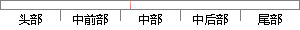

各种状态的转换图如下所示。
片段位置图

相似结果
相似片段：通过展示事件和转换,状态图显示了对象在其生命周期中依 次经历的各种状态。 要...多条件的分支判定又分为链式和非链式的分支,两种分支分 别如下图所示: 5、...
| 标题 | 《状态图_百度文库》 |
| 对比库 | PaperRater云论文库 |
| 网址 | http://wenku.baidu.com/link?url=L9RJiosMyoS59h-iJRTvQh-ujhu_XRsI582UVPopROGtzudX2qTYFwBj7l0ZPz3qR1sH1wzW32ZPRCnFYvJjNVdn4HUPRpe5YYWtBmOiEhy |
| 相似率 | 80% （严重抄袭） |
※ 片段修改建议 ※
近似词参考：- 各种：各类 种种
- 如下：以下
- 状态：状况
系统自动生成语句：各类状况的转换图以下所示。
注：本片段修改建议为系统自动生成，仅供参考。